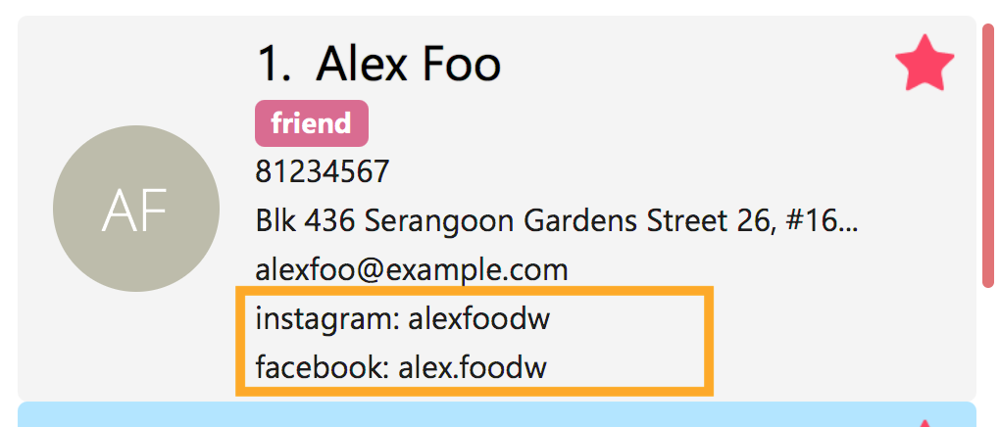

Project: AddressBook - Level 4
KayPoh! is a desktop address book application with social media integrations. The user interacts with the application using a command line interface, and it has a GUI created with JavaFX. It is written in Java and has about 14k LoC.
Code contributed: [Functional code] [Test code]
Enhancement Added: Delete multiple contacts
External behavior
Start of Extract [from: User Guide]
Deleting persons by index (default):
Deletes person(s) specified by their indexes in the last displayed list.
Format: delete INDEX [ADDITIONAL_INDEXES]…
Examples:
-
list
delete 2 3
Deletes the 2nd and 3rd persons in the address book. -
find Betsy
delete 1
Deletes the 1st person in the results of thefindcommand.
End of Extract
Justification
The current design only allows users to delete one contact at a time. The user may want to delete many contacts and running the delete command multiple times can be a hassle. Thus there is a need to make the delete command more efficient so as to allow users to delete multiple contacts with just one command.
Implementation
A DeleteCommand is changed to store an ArrayList of Index instead of just one Index. The multiple Index objects can be used to delete multiple contacts, and also extract the deleted contacts in String form.
Enhancement Added: Allow multiple phone number fields
Adding a person: add
Adds a person to the address book.
Format: add n/NAME p/PHONE_NUMBER [p/ADDITIONAL_PHONE_NUMBERS]… e/EMAIL a/ADDRESS [f/] [dp/DISPLAY_PHOTO_FILE_PATH] [t/TAG]… [s/SOCIAL_PLATFORM USERNAME]…
Alias: a
Examples:
-
add n/John Doe p/98765432 e/johnd@example.com a/John street, block 123, #01-01
Adds a contact with the nameJohn Doe, phone number98765432, email addressjohnd@example.com, addressJohn street, block 123, #01-01. -
add n/Rob Cross p/92456877 p/64123456 e/rob@example.com a/Kent Ridge Drive 23 t/husband f/ s/facebook r.cross10 dp/C:/Users/Seedu/Pictures/batman.png
Adds afavoritecontact with the nameRob Cross, phone numbers92456877and64123456, email addressrob@example.com, addressKent Ridge Drive 23, taghusband, aFacebookaccount with the usernamer.cross10, and adds adisplay photoimported from the locationC:/Users/Seedu/Pictures/batman.png.
Editing a person: edit
Edits an existing person in the address book.
Format: edit INDEX [n/NAME] [p/PHONE]… [e/EMAIL] [a/ADDRESS] [f/ OR uf/] [dp/DISPLAY_PHOTO_FILE_PATH] [t/TAG]… [s/SOCIAL_PLATFORM USERNAME]…
Alias: e
Examples:
-
edit 1 p/91234567 e/johndoe@example.com
Edits the phone number and email address of the 1st person to be91234567andjohndoe@example.comrespectively. -
edit 2 f/ dp/C:/Users/Seedu/Pictures/superman.png s/instagram janedoe123 s/facebook jane.doe
Marks the 2nd person afavoritecontact, changes the existing display photo to the new file specified byC:/Users/Seedu/Pictures/superman.pngand edits the social media accounts to be aFacebookaccount with the usernamejane.doe, and an Instagram account with the usernamejanedoe123. -
edit 3 n/Betsy Crower dp/ t/
Edits the name of the 3rd person to beBetsy Crower, removes existing display photo and clears all existing tags.
End of Extract
Justification
The current design only allows users to store one phone number for a contact. However, most people have more than one phone number, for example, handphone numbers, home phone numbers and office numbers. Thus users may need to store more than one phone number for a contact.
Multiple Fields
When an AddCommandParser or EditCommandParser is used to parse a command, an ArgumentMultimap object is created which contains a hashmap mapping the prefixes to a list of their respective arguments.
The ArgumentMultimap class has a getValue method and a getMultipleValues method. If there are multiple strings passed as arguments to the prefix, the getValue method returns only the last string in the list, while the getMultipleValues returns a concatenation of all the strings in the list.
The ParserUtil class has various parsing methods, such as parseName and parsePhone. The method parseName returns a Name object wrapped in the Optional class and the method returns a Phone object wrapped in the Optional class.
The parsePhone method in the ParserUtil class calls the getMultipleValues method of the ArgumentMultimap class instead of the getValue method called by the other parsers. This allows multiple phone numbers to be stored in a Phone object.
Design Considerations
Aspect: Display of the multiple phone numbers
Alternative 1 (current choice): Insert a newline character ("\n") between different phone numbers.
Pros: Easier to see the different phone numbers.
Cons: Less flexibility in adding multiple phone numbers (cannot type p/12345 56789).
Alternative 2: Insert a space character (" ") between different phone numbers.
Pros: More flexibility in adding multiple phone numbers. Can type type p/12345 56789 to add the two phone numbers with only one "p/" prefix.
Cons: Harder to see the different phone numbers, makes the display more cluttered.
Aspect: Initialising of Phone object
Alternative 1 (current choice): Constructor of Phone takes in a String as parameter, modify current constructor.
Pros: No need to create a new method.
Cons: Not so easy to manipulate the string and split the multiple phone numbers.
Alternative 2: Create a new constructor for Phone that takes in a List<String> as parameter.
Pros: Easier to manipulate the multiple phone numbers in the list.
Cons: Can cause problems during testing as there are two constructors.
Aspect: Allowing duplicate phone numbers for a contact
Alternative 1 (current choice): Do not allow duplicate phone numbers.
Pros: Makes the address book more usable.
Cons: Need to implement checking of the arguments.
Alternative 2: Allow duplicate phone numbers.
Pros: No need to check whether the arguments have been entered already.
Cons: May cause the address book to be messy if adding duplicate phone numbers was not the user’s intention.
Aspect: Dealing with invalid values as well as valid values
Alternative 1 (current choice): Accept valid values and ignore invalid values.
Pros: Makes it easier for the user as the invalid value may have been an accident and the valid value may actually be correct.
Cons: Both values may have been incorrect and an incorrect phone number would have been added.
Alternative 2: Ignore all values as long as there is one invalid value.
Pros: No need to continue checking the rest of the arguments once there is one invalid value.
Cons: The incorrect value may have been an accident and the user may want the valid value to be added as a phone number to the contact.
End of Extract
Enhancement Added: Enhanced select command
Selecting a person: select
To view the social media feed of a contact, use the select command.
Command format: select INDEX [SOCIAL_MEDIA_PLATFORM]
Alias: s
-
The
INDEXrefers to the index number of the person to be stalked in the person list. -
The
SOCIAL_MEDIA_PLATFORMidentifies which social media account belonging to the person you wish to view. -
If no
SOCIAL_MEDIA_PLATFORMis specified, the feed of a random social media account associated with the person will be displayed in the browser window. If there is no social media account associated with the person, a Google search of the person’s name will be displayed instead.
You should see the person’s social media feed displayed in the browser window.

Example:
-
select 1 facebook
Displays the Facebook account of the first person in the current person list
| Incorrect | Correct |
|---|---|
Input an |
Ensure that the specified |
Input a |
Ensure that the selected user has an associated account for the  |
End of Extract
Justification
The current design is such that when a contact is selected using the SelectCommand, a google search page searching the contact’s name is displayed in the browser. However, the target users being more inclined towards social media will want to view more interesting information about their contacts, such as their social media feeds. Thus, it will be useful to allow users to view the social media accounts of their contacts.
Implementation
When the user selects a contact, a JumpToListRequestEvent storing the index of the contact and the social media type is raised. When the JumpToListRequestEvent is handled, a PersonPanelSelectionChangedEvent is raised and the index and social media type is passed to the PersonPanelSelectionChangedEvent. When a PersonPanelSelectionChangedEvent is raised, the PersonCard is extracted from the event using the index and from the PersonCard, the ReadOnlyPerson can be obtained. The SocialInfo of the contact can be obtained from the ReadOnlyPerson and the URL String of the social media accounts of the contact can be retrieved. The WebEngine then loads the URL of the requested social media type.
Enhancement Proposed: Improve find command
Allow users to search for contacts that have a certain keyword as part of the name, so that the keyword does not have to match the name exactly.
Enhancement Proposed: Add command whois
Allow users to input a phone number and find out who the phone number belongs to.